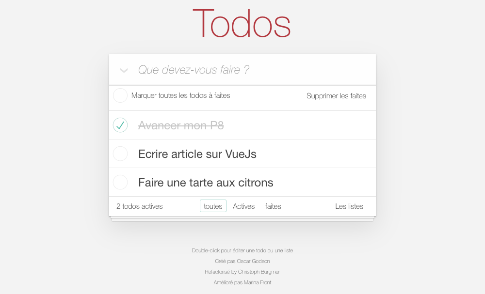
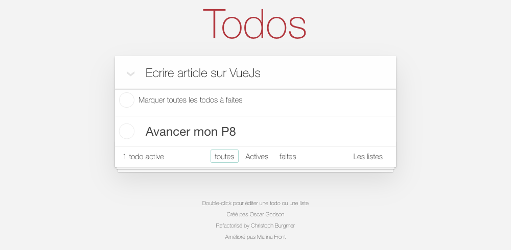
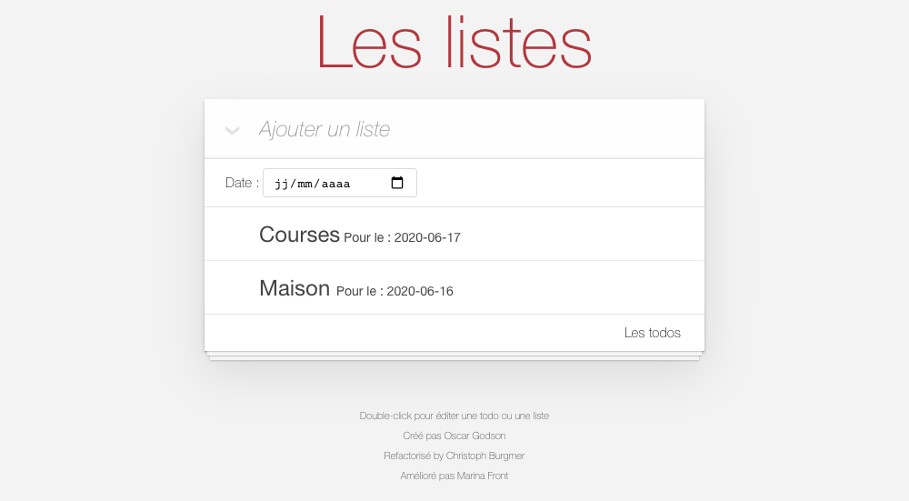
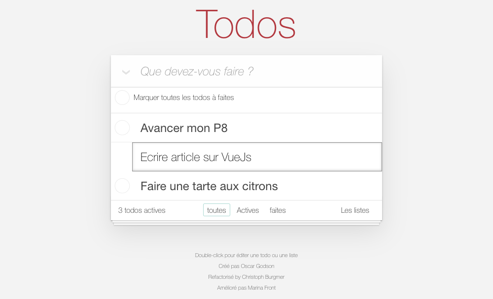
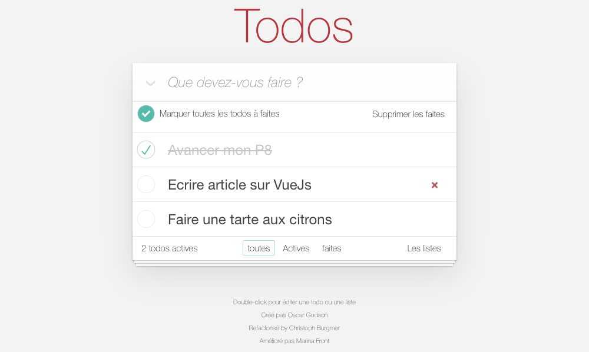
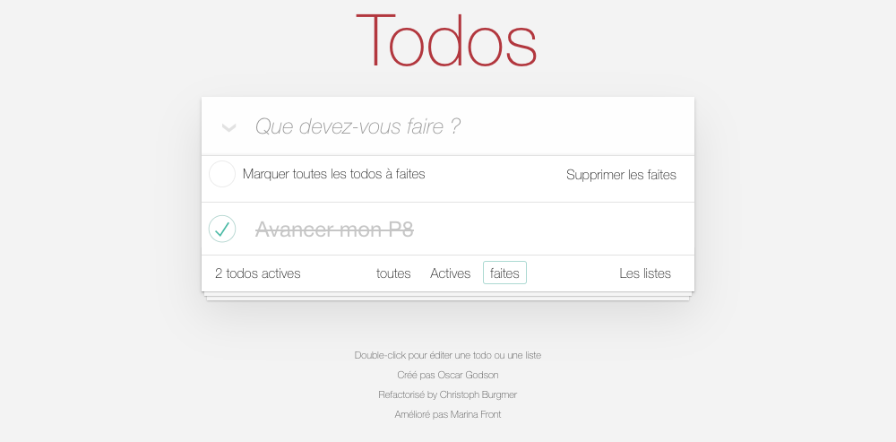

Documentation fonctionnelle
Cette application de todolist offre plusieurs fonctionnalités qui simplifira votre quotidien.
- Lister les tâches et des listes de tâches
- Ajouter / modifier / Supprimer des tâches et des listes de tâches
- Associer une date à une liste de tâche
- Cocher des tâches
- Filtrer les tâches selon leur état
1. Tâches et listes de tâches
La page d'accueil est la page des tâches. Elle se présente comme ci-dessus. J'appelerai ces tâches, des tâches orphelines car elle n'appartiennent pas à une liste. Pour aller sur la pages des listes il faut cliquer en bas à droite de sur "Les listes"

Et voici la page des listes. Pour revenir sur la pages des tâches, il faut cliquer en bas à droite de sur "Les todos". Pour afficher les tâches d'une liste il faut cliquer sur la petite flèche verte à droite de la liste.

Voici la page des tâches d'une liste. pour revenir en arrière, il faut cliquer en bas à droite de sur "Les listes"
1. Ajouter des tâches et les listes

Nous pouvons apercevoir le champ de saisie dans lequel il est indiqué 'Que devez-vous faire ?', puis un second champ (dans notre exemple) d'une tâche ajoutée nommée 'Avancer le P8'.
Pour ajouter une tâche, cliquez dans le champ de saisie puis nommez votre tâche (ici 'Ecrire article sur VueJs').Pressez ensuite la touche entrée ou cliquez sur la petite flèche à gauche du champ pour ajouter la tâche à la liste.
Pour ajouter des liste c'est le même principe : dans le champ de saisie il est indiqué 'Ajouter une liste'

Pour les listes, vous pouvez ajouter une date. lorsque la date arrivera, les tâches de la liste apparaîtront aussi sur la page d'accueil.
2. Modifier une tâche ou une liste
Double-cliquez sur la tâche ou la liste à modifier. Un encadré gris s'affiche alors, vous pouvez modifier le titre de votre tâche ou de votre liste.
Pour modifier la date d'une liste, il faut cliquer sur la flèche verte à droite de la liste comme vu précédemment et modifier la date une fois sur la page des tâches de la liste
3. Compléter des tâches
Vous pouvez cliquer sur le cercle à gauche de la tâche, ce qui fera apparaître une coche verte et grisera le titre de la tâche. De cette manière, vous changerez l'état de la tâche (ce sur quoi nous reviendrons en dernière partie de cette documentation).

Vous pouvez aussi cocher toutes les tâches en même temps en cochant le cercle au dessus de toutes les tâches où il est écrit 'Marquer toutes les todos à faites'. La coche 'Marquer toutes les todos à faites' est disponible seulement pour les tâches orphelines
4. Supprimer une tâche
Lors du passage du curseur sur la tâche en question, une croix rouge s'affiche sur la droite. En cliquant dessus, la tâche sera supprimée automatiquement. Ceci est possible pour toutes les tâches, orphelines ou appartenant à une liste.
Dans le cas des tâches orphelines, vous pouvez aussi cliquer sur le bouton 'Supprimer les faites' à droite de la coche 'Marquer toutes les todos à faites, ce qui aura pour effet de supprimer toutes les tâches déjà cochées.
5. Filtrer les tâches
La fonctionnalité de filtre des tâches n'est possible que pour les tâches orphelines. Comme vous pouvez le voir ci-dessus, vous pouvez utiliser les filtres placer en bas de la liste, il y a trois filtres. Vous pourrez ainsi afficher les tâches en fonction de leur état. Ici, l'option 'toutes' est entourée. Cela affiche donc, toutes les tâches, quel que soit leur état.
Chaque tâche possède deux états : 'Active' ou 'Completed'
5.1. Les tâches 'active'

L'état premier d'une tâche est par défaut 'Actives'. Cliquez sur 'Actives' pour afficher les tâches actives
5.1. Les tâches 'completed'
Le deuxième état ('completed') correspond aux tâches qui sont cochées. Cliquez sur 'Faites' pour afficher les tâches faites